Лучшие дистанционные курсы по бизнес-консультированию и бизнес-анализу
| Место | Программа обучения | Сайт курса |
|---|---|---|
| 1 🥇 | Бизнес-консультант Академия Eduson |
Перейти |
| 2 🥈 | Психолог бизнес-консультант. Коуч Московский институт психологии |
Перейти |
| 3 🥉 | Профессия Коуч. Психолог бизнес-консультант Московская Бизнес Академия |
Перейти |
| 4 | Коучинг. Психологическое бизнес-консультирование Московский институт технологий и управления |
Перейти |
| 5 | Бизнес-аналитик Русская Школа Управления |
Перейти |
| 6 | Профессия
Бизнес-аналитик Skillbox |
Перейти |
| 7 | Профессия
бизнес-аналитик с нуля Нетология |
Перейти |
| 8 | Бизнес-аналитик Яндекс Практикум |
Перейти |
| 9 | Бизнес-аналитик Бруноям |
Перейти |
| 10 | Профессия
Бизнес-консультант MBA CITY |
Перейти |
| 11 | Профессия
Бизнес-консультант Новый Бизнес Университет |
Перейти |
| 12 | Бизнес-консультирование и корпоративное
обучение НИУ ВШЭ (Нижний Новгород) |
Перейти |
| 13 | Дипломная программа
«Бизнес-консультант» Бауманский учебный центр «Специалист» |
Перейти |
Бизнес-консультант – Академия Eduson
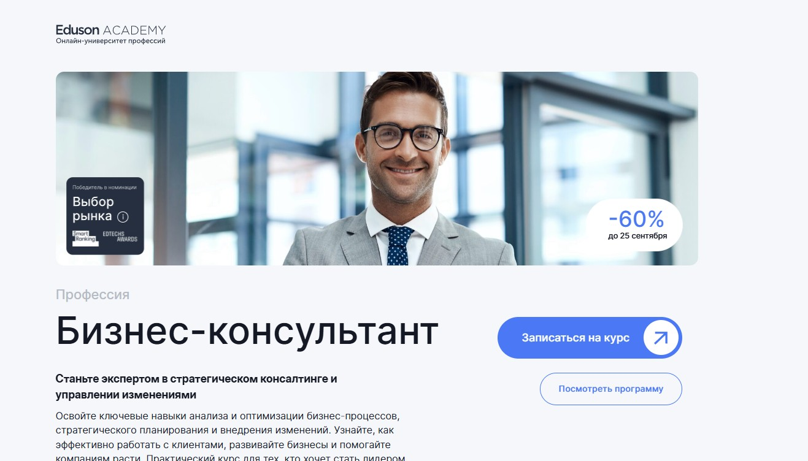⭐ Рейтинг: 5.0
- Сайт: eduson.academy/business-consultant
- Полная стоимость: 27 416 руб/мес — скидка до 60% до 20 сентября, можно вернуть 13% через налоговый вычет. Грант на обучение не предоставляется.
- Рассрочка: 10 966 руб/мес на 12 месяцев без переплат.
- Длительность: Самостоятельный темп — доступ к материалам навсегда.
- Документ: Диплом о профессиональной переподготовке, подтверждённый лицензией №00374370 от 27.05.2022.
- Трудоустройство: Поддержка куратора в течение года, помощь в запуске практики, стажировка под руководством практикующего консультанта Павла Сивожелезова.
Особенности курса:
Программа построена на реальных бизнес-кейсах, интерактивных заданиях и тренажёрах, что позволяет с первого дня чувствовать себя в условиях настоящей рабочей среды. Вы получите более 100 шаблонов, чек-листов и конспектов от экспертов, которые можно сразу применять с клиентами. Обучение проходит в удобное время — без дедлайнов, с обратной связью по каждому заданию. Курс подходит как новичкам, так и тем, кто уже работает в управлении или аналитике и хочет систематизировать знания. Доступ к обновлениям — бесплатный и пожизненный.
Преподаватели курса:
-
Ицхак Адизес — преподаватель Стэнфорда и Колумбийского университета, более 50 лет в управлении, методики которого используют Coca-Cola, Volvo, Bank of America.
-
Максим Поташев — ex-руководитель в «Лаборатории Касперского» и «Росгосстрахе», эксперт по маркетинговому консалтингу, 14+ лет опыта.
-
Александр Голутвин — гендиректор DNS Development (2013–2021), 15+ лет в управленческой деятельности.
-
Иван Алёхин — руководит финансовыми процессами в группе компаний «Порт», 13 лет в финансах.
-
Кирилл Линник — более 160 реализованных консалтинговых проектов, автор уникальных методик в контроллинге.
-
Оксана Дажун — эксперт по антикризисному управлению, спикер Сколково, Альфа-банка и Сбербанка.
-
Виктор Коданев — профессор ВШЭ, консультант крупных корпораций, входит в топ закупщиков России.
-
Ирина Егорова — лидер трансформаций, опыт на CEO, COO в таких компаниях, как IBM, Auchan, Metro Group.
Кратко о программе курса:
- Онбординг и введение в профессию бизнес-консультанта.
- Карьерные пути и личная стратегия развития.
- Принятие управленческих решений на основе данных.
- Классический и современный стратегический менеджмент.
- Операционный менеджмент и оптимизация процессов.
- Управление бизнес-процессами: диагностика, реинжиниринг, автоматизация.
- Рост продаж: метрики, фан-кост, стратегии масштабирования.
- Эффективное взаимодействие с клиентами и построение доверия.
- Работа с заказчиком: от первого контакта до закрытия проекта.
- Практика на 58 реальных кейсах и 20 онлайн-тренажёрах.
- Более 100 готовых шаблонов по анализу, планированию и отчётности.
Чему научитесь:
Вы научитесь глубоко анализировать бизнес, выявлять узкие места и быстро разрабатывать решения, которые дают экономический эффект. Научитесь работать с клиентами, продавать консультационные услуги и внедрять изменения в компаниях любого размера.
Преимущества и особенности:
- Обучение от практикующих консультантов с опытом в топ-компаниях и международных корпорациях.
- Практическая отработка навыков через интерактивные кейсы и онлайн-тренажёры.
- Пожизненный доступ к курсу и бесплатные обновления материалов.
- Готовые шаблоны и чек-листы, которые можно применять сразу с первыми клиентами.
- Персональная обратная связь по каждому заданию от экспертов индустрии.
- Стажировка под руководством известного бизнес-консультанта Павла Сивожелезова.
- Диплом, подтверждающий профессиональную переподготовку, с возможностью использовать при трудоустройстве.
- Гибкий график — учиться можно в любое время без жёстких дедлайнов.
Читайте отзывы учеников:
Студенты отмечают высокую практическую ценность курса, реалистичные кейсы и поддержку кураторов. Многие уже на этапе обучения начали консультировать реальных клиентов. Пользователи хвалят структурированность материала, доступные объяснения и готовые инструменты. Отдельно подчёркивается качество преподавателей — их опыт и подход к обучению, который отличается от академических программ.
Психолог бизнес-консультант. Коуч – Московский институт психологии
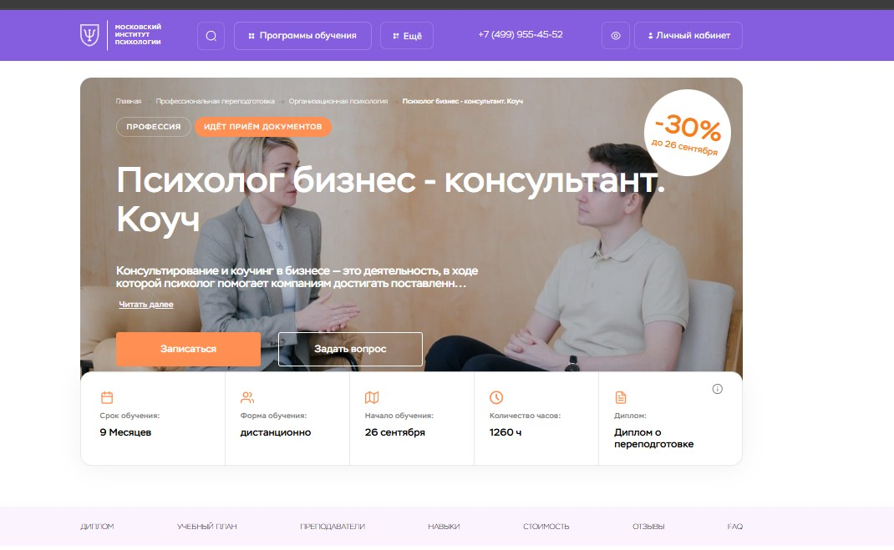⭐ Рейтинг: 5.0
- Сайт: mip.institute/professions/organizacionnaya-psihologiya/psiholog-biznes-konsultant.-kouch
- Полная стоимость: 97 925 ₽ вместо 140 000 ₽ с возможностью получения налогового вычета и беспроцентной рассрочки.
- Рассрочка: от 8 200 ₽ в месяц на 12 месяцев.
- Длительность: 9 месяцев.
- Документ: Диплом о профессиональной переподготовке.
- Трудоустройство: Поддержка при запуске частной практики, вхождение в профессиональное сообщество ОППЛ.
Особенности курса:
Программа ориентирована на тех, кто хочет освоить профессию с нуля или систематизировать знания. Обучение проходит дистанционно с применением современных образовательных технологий. В ходе курса вы изучите ключевые направления организационной психологии, коучинга и бизнес-консультирования. Уделяется внимание практике: разбор реальных кейсов, выполнение заданий, интервизии и супервизии. Все программы проходят по лицензии и дают диплом с международным приложением.
Преподаватели курса:
-
Додонова Ирина Викторовна — практикующий психолог, специалист по транзактному анализу, IFS и EMDR, коуч с международными сертификатами ICU и ICA, академический директор института, стаж более 5 лет.
-
Валуев Олег Сергеевич — консультирующий психолог экзистенциального направления, исследователь человеческого потенциала, автор более 150 научных статей, 10 лет опыта в профессии.
Кратко о программе курса:
- Психологическое бизнес-консультирование
- Основы современной психологии
- Профессиональная этика
- Психология личности
- Психология общения
- Коучинг
- Групповой и командный бизнес-коучинг
- Техника и практика бизнес-коучинга
- Психология лидерства
- Психология управления
- Социальная психология
- Управление конфликтами
- Психодиагностика
- Психология труда
- Организационная психология
- Социальная психология переговоров
- Стрессменеджмент и профилактика выгорания
- Карьерный коучинг
Чему научитесь:
Вы научитесь выявлять и решать психологические проблемы в бизнесе, проводить коуч-сессии с руководителями и командами, создавать эффективные стратегии развития сотрудников и организаций.
Преимущества и особенности:
- Дистанционный формат — можно учиться из любой точки мира.
- Скидка до 30% при регистрации до 23 сентября.
- Выпускники получают диплом с международным приложением и входят в сообщество ОППЛ.
- Гарантия возврата денег в течение первых двух недель обучения.
- Практическая подготовка — домашние задания, кейсы, поддержка куратора.
- Средний доход выпускников — от 60 000 до 120 000 ₽ в месяц.
Читайте отзывы учеников:
Слушатели отмечают высокий уровень преподавания, практическую направленность программы и возможности для личного и профессионального роста. Постоянная поддержка команды, актуальные материалы и отсутствие лишней информации — частые плюсы в отзывах. Многие подчеркивают, что курс помог стартовать в профессии и начать клиентскую практику уже в процессе обучения.
Профессия Коуч. Психолог бизнес-консультант – Московская Бизнес Академия
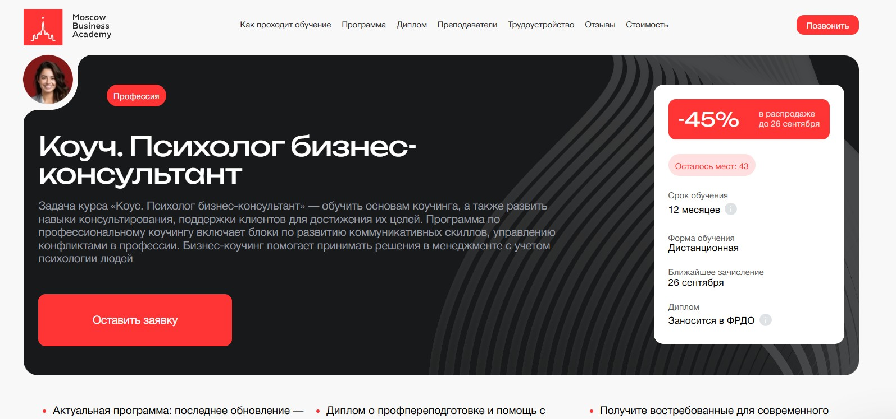⭐ Рейтинг: 4.9
- Сайт: moscow.mba/programs/profession/online/kouch-psiholog-biznes-konsultant
- Полная стоимость: 233 000 ₽ (стоимость со скидкой — от 5 339 ₽/мес). Возможен налоговый вычет 13%. Грант на обучение не предоставляется.
- Рассрочка: От 5 339 ₽ в месяц на 24 месяца без переплат.
- Длительность: 12 месяцев.
- Документ: Диплом о профессиональной переподготовке, занесённый в ФРДО, и сертификат установленного образца.
- Трудоустройство: Помощь в трудоустройстве: подготовка резюме, конкурентное портфолио, поиск вакансий, тренировка собеседований. 65 % выпускников находят работу в течение 3 месяцев.
Особенности курса:
Обучение сочетает современные методики коучинга и практические инструменты бизнес-психологии. Программа обновляется ежегодно с учётом актуальных запросов работодателей. 70 % курса — практика на реальных кейсах. Поддержка кураторов на всех этапах. Обучение проходит дистанционно, что позволяет совмещать учёбу с работой или другими делами. Учебная платформа доступна из любой точки мира. Обучение ведётся по государственной лицензии №041221. Диплом соответствует требованиям ФРДО и признаётся в России и за рубежом.
Преподаватели курса:
-
Валентина Катаниди — сертифицированный карьерный консультант, бизнес-тренер, более 3500 часов проведённых тренингов, полуфиналист «Лиги лекторов».
-
Василий Ильин — практикующий психолог, эксперт по мотивации и управлению стрессом в индустрии красоты.
-
Елена Дарменко — психолог-консультант с 20-летним стажем, специалист по нейромаркетингу и адаптации экспатов, член IACCP.
-
Юлия Гордеева — коуч ECA, сертифицированный коуч-медиатор Немецкой школы коучинга и медиации.
-
Мария Егиазарова — выпускник МГУ, кафедра социальной психологии, бизнес-психолог, спикер на профессиональных мероприятиях.
Кратко о программе курса:
- Востребованность профессии, личностный рост и этика психолога-консультанта (1 неделя).
- Психология бизнеса (4 недели).
- Основы современной психологии (4 недели).
- Психология личности (3 недели).
- Организационная психология (4 недели).
- Коучинг в бизнесе (4 недели).
- Психологическое консультирование (4 недели).
- Бизнес-психологические технологии: диагностика, фасилитация, интеграция (4 недели).
- Психологическое бизнес-консультирование (4 недели).
- Командообразование (3 недели).
- Групповой и командный бизнес-коучинг (3 недели).
- Карьерный коучинг (4 недели).
- Эмоциональный интеллект (2 недели).
- Психология лидерства (4 недели).
- Управление конфликтами (3 недели).
- Итоговый проект.
- Бонусные модули: эффективные коммуникации, поведенческая психология, социальная психология переговоров, деловое общение (по 2 недели).
Чему научитесь:
Освоите методы коучинга, научитесь выявлять проблему клиента, применять техники психологического сопровождения и мотивации, управлять конфликтами и разрабатывать индивидуальные стратегии достижения целей. Получите навыки деловых переговоров, формирования команды и поддержки руководителей.
Преимущества и особенности:
- 70 % программы — практика на основе реальных бизнес-задач.
- Помощь в трудоустройстве: от резюме до собеседований.
- Беспроцентная рассрочка на 24 месяца и возможность вернуть 13 % через налоговый вычет.
- Диплом вносится в ФРДО, выдаётся по программе повышения квалификации по лицензии.
- Обучение с преподавателями, имеющими опыт в крупных компаниях и международных проектах.
- Гибкий график — можно совмещать с работой.
- Доступ к материалам 24/7 и поддержка кураторов на протяжении всего курса.
- Курс подходит как новичкам, так и руководителям компаний, желающим углубить компетенции.
Читайте отзывы учеников:
Выпускники отмечают практическую пользу программы, отсутствие лишней теории и качественную поддержку кураторов. Многие подчёркивают, что уже через месяц после обучения получили вакансии в сфере коучинга. Студенты ценят структуру курса, удобную платформу и профессионализм спикеров. Практические задания помогли быстро внедрить знания в реальную работу.
Коучинг. Психологическое бизнес-консультирование – Московский институт технологий и управления
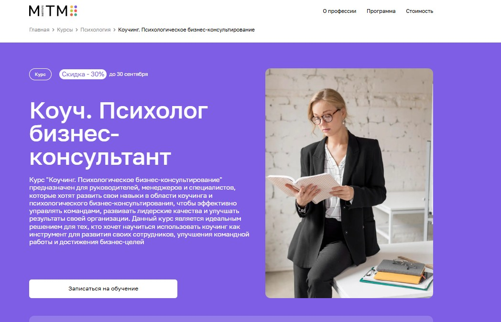⭐ Рейтинг: 4.9
- Сайт: mitm.institute/kouching-psihologicheskoe-biznes-konsultirovanie--kurs
- Полная стоимость: 9 680 ₽/мес при оплате в рассрочку; есть возможность вернуть 13% через налоговый вычет.
- Рассрочка: Беспроцентная рассрочка на 12 месяцев — от 9 680 ₽ в месяц.
- Длительность: 1 год (1100 часов обучения).
- Документ: Диплом о профессиональной переподготовке государственного образца.
- Трудоустройство: Помощь в трудоустройстве, индивидуальные консультации по карьере, поддержка при запуске частной практики.
Особенности курса:
Программа разработана для тех, кто хочет освоить коучинг как инструмент управленческого роста и личностного развития. Обучение проходит полностью дистанционно, без отрыва от работы. В ходе курса вы изучите ключевые методы психологического консультирования в бизнес-среде, научитесь проводить сессии, управлять командами и выстраивать эффективные коммуникации. Важная часть — практика: вы работаете с реальными кейсами, получаете обратную связь от супервизоров и участвуете в воркшопах. Доступ к материалам сохраняется до окончания программы, а куратор сопровождает вас на каждом этапе. Программа адаптирована под актуальные запросы рынка и содержит более 120 видеолекций от ведущих экспертов.
Преподаватели курса:
-
Лагунова Ирина Валерьевна — сертифицированный бизнес-тренер ISBT, более 15 лет опыта в обучении, член Ассоциации КПТ.
-
Латынцева Ольга Анатольевна — семейный психолог, эксперт на телевидении, свыше 10 лет в практике консультирования.
-
Койфман Юлианна Евгеньевна — член ICPA, более 7 лет опыта в коучинге, специализируется на бизнес-консультировании.
Кратко о программе курса:
- Психология бизнеса и личности.
- Основы современной психологии.
- Коучинг в корпоративной среде.
- Организационная психология и командообразование.
- Психологическое консультирование и диагностика.
- Эмоциональный интеллект и управленческие навыки.
- Разработка программ развития персонала.
- Бизнес-коучинг: карьерный, групповой и командный.
- Эффективные деловые коммуникации.
- Поведенческая психология и переговоры.
- Стратегии лидерства и антикризисного управления.
- Методики анализа мотивации и поведения сотрудников.
Чему научитесь:
Научитесь применять коучинговые техники в управлении, проводить консультации, мотивировать команду, ставить цели и разрабатывать стратегии развития бизнеса на основе психологических подходов.
Преимущества и особенности:
- Дистанционный формат — учитесь из любой точки мира.
- Государственный диплом по итогам обучения.
- Поддержка куратора и доступ к комьюнити студентов.
- Практическая ориентация: воркшопы, кейсы, сессии с обратной связью.
- Скидка 30% при записи до 20 сентября.
- Возможность расторгнуть договор и вернуть деньги в первые две недели.
- Программа обновляется под современные бизнес-реалии.
- Доступ к онлайн-библиотеке и записям лекций на весь срок обучения.
Читайте отзывы учеников:
Слушатели отмечают четкую структуру материала, поддержку кураторов и практическую пользу курса в реальной работе. Многие отмечают, что обучение помогло выстроить эффективные коммуникации в команде, улучшить личные управленческие навыки и запустить консультационную практику. Дистанционный формат оценивают как удобный, особенно для работающих специалистов.
Бизнес-аналитик – Русская Школа Управления
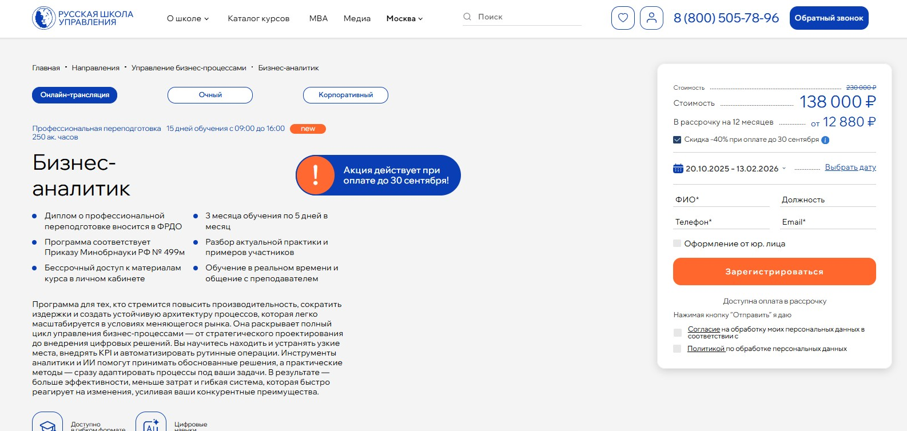⭐ Рейтинг: 4.9
- Сайт: uprav.ru/kursy-po-kachestvu/biznes-analitik-online/
- Полная стоимость: 230 000 ₽; при оплате до 30 сентября 2025 года — 207 000 ₽ (скидка 10%). Возможен налоговый вычет за обучение по программе профессиональной переподготовки.
- Рассрочка: от 19 320 ₽ в месяц на 12 месяцев без переплат.
- Длительность: 3 месяца по 5 дней в месяце или индивидуальный график до 6 месяцев.
- Документ: Диплом о профессиональной переподготовке, вносится в федеральный реестр ФРДО, соответствует приказу Минобрнауки РФ №499м.
- Трудоустройство: Поддержка в развитии карьеры — 72% выпускников делают карьерный рост после обучения, доступ к подборке вакансий и нетворкингу.
Особенности курса:
Программа ориентирована на специалистов и руководителей, стремящихся выстроить эффективную систему управления процессами с применением цифровых решений и ИИ. Обучение сочетает 70% практики и 30% теории, включает разбор реальных кейсов, работу с инструментами BPMN, BPLA, RPA и аналитики. После курса вы получаете вечный доступ к материалам, записям занятий и бонусную базу знаний: шаблоны, чек-листы и методические рекомендации. Формат позволяет обучаться онлайн или перейти на очный формат, пропущенные уроки доступны в записи. Подходит для корпоративного и индивидуального развития.
Преподаватели курса:
-
Алёшин Игорь Николаевич — эксперт по бизнес-аналитике и внедрению процессного управления, практик в области систем менеджмента качества.
-
Антипин Антон Романович — специалист по организационному развитию, член ABPMP Russian Chapter.
-
Алейник Алексей Алексеевич — управленец с более чем 10-летним опытом, специалист по digital-трансформации и электронной коммерции.
-
Лучков Виктор Евгеньевич — бизнес-консультант, сертифицированный аудитор ISO 9001:2015, эксперт по внедрению систем управления.
Кратко о программе курса:
- Стратегическое управление процессами: внедрение процессного подхода и построение системы непрерывного совершенствования.
- Моделирование и оптимизация операций с использованием нотаций BPMN и BPLA.
- Анализ эффективности бизнес-процессов через KPI и выявление рисков.
- Проектирование процессов с фокусом на клиента и минимизацию потерь.
- Цифровая трансформация: оценка готовности компании, выбор процессов для автоматизации, внедрение RPA.
- Применение искусственного интеллекта и инструментов анализа данных для принятия решений.
- Кибербезопасность и защита данных в цифровой среде.
- Управление интеллектуальной собственностью в условиях цифровой экономики.
- Функционально-стоимостной анализ для поиска резервов роста.
- Разработка архитектуры процессов и регламентация деятельности.
Чему научитесь:
Научитесь оптимизировать процессы, выявлять узкие места, внедрять автоматизацию и KPI, строить гибкую систему управления на основе цифровых решений и ИИ, применяя актуальные методики реинжиниринга и аналитики.
Преимущества и особенности:
- 70% практики и только 30% теории — акцент на реальных задачах и кейсах.
- Преподаватели — действующие консультанты и управленцы из ведущих компаний.
- Доступ к вечным материалам, записям занятий и бонусной базе знаний после окончания.
- Гибкий график и возможность переключения формата: онлайн, очно или смешанно.
- Официальный документ с внесением в ФРДО и защитой от подделок.
- 85% студентов возвращаются на другие курсы — высокая удовлетворённость качеством обучения.
Читайте отзывы учеников:
Слушатели отмечают высокую практическую ценность занятий, глубокую проработку тем вроде цифровых двойников и баланса ресурсов, а также качественное преподавание. Многие отмечают, что полученные навыки начали применять в работе сразу после первых модулей. Удобство личного кабинета, качество связи и вовлечённость преподавателей — ключевые плюсы, которые чаще всего упоминаются. 95% студентов оценивают формат обучения как максимально удобный.
Профессия Бизнес-аналитик – Skillbox
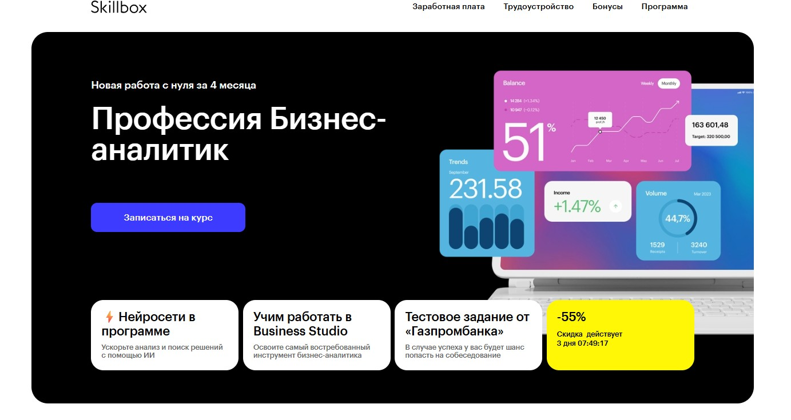⭐ Рейтинг: 4.9
- Сайт: skillbox.ru/course/profession-business-analyst-sravni/
- Полная стоимость: Базовый тариф от 9 417 ₽/мес в рассрочку. Возможен налоговый вычет — до 13% от стоимости курса. Грант не предоставляется.
- Рассрочка: До 25 месяцев без переплат и первого взноса.
- Длительность: 4 месяца до трудоустройства на позицию Junior, до 8 месяцев до уровня Junior+.
- Документ: Диплом о профессиональной переподготовке или сертификат установленного образца.
- Трудоустройство: Помощь в поиске работы: составление резюме, подготовка к собеседованиям, доступ к закрытому каналу с вакансиями. Действует акция: «Поможем найти работу или вернём деньги».
Особенности курса:
Обучение построено на практическом освоении профессии с нуля. Программа разработана с учётом запросов рынка труда и включает 70% практики. Студенты работают с реальными кейсами от крупных компаний — «Газпромбанк» и Nefis Cosmetics». Доступ к материалам — навсегда, занятия проходят онлайн с возможностью учёбы с телефона. Включён курс по ChatGPT для автоматизации задач и бесплатный доступ к Business Studio — инструменту, на котором экономят более 40 000 ₽. Есть поддержка кураторов, HR-консультантов и службы заботы.
Преподаватели курса:
-
Антон Антипин — генеральный директор Business Set, более 20 лет опыта в бизнес-анализе.
-
Никита Карлушин — Product owner в «Крок», эксперт по цифровизации IT-систем.
-
Владимир Скареднов — руководитель проектов в Business Set, 19 лет в аналитике.
-
Ренат Шагабутдинов — сертифицированный тренер по MS Office, 10 лет практики.
Кратко о программе курса:
- Бизнес-анализ: сбор информации, моделирование процессов (IDEF0, BPMN 2.0, EPC), оценка рисков и рентабельности.
- Анализ данных: продвинутый Excel и Google Sheets, SQL, Python, визуализация в Power BI и PowerPoint.
- Работа с инструментами: Business Studio, Miro, Figma, «Яндекс Метрика», Google Analytics.
- Системный анализ: 25 заданий и проект для портфолио.
- Использование ChatGPT в повседневных задачах аналитика.
- Практика в трёх сферах: ретейл, услуги, производство.
- Подготовка к карьере: резюме, портфолио, собеседования, доступ к вакансиям.
Чему научитесь:
Вы освоите навыки анализа бизнес-процессов, научитесь работать с данными в Excel, SQL и Python, строить отчёты и модели процессов. Получите опыт решения реальных задач из разных отраслей и создадите портфолио из 6 проектов, необходимых для трудоустройства.
Преимущества и особенности:
- Трудоустройство или возврат денег — прозрачные гарантии от платформы.
- Работа с кейсами от «Газпромбанка» и Nefis Cosmetics» — опыт на реальных данных.
- Бесплатный доступ к Business Studio — ключевой инструмент для аналитики.
- Индивидуальная обратная связь от экспертов в течение 24 часов.
- Гибкий график и возможность учиться с телефона — подходит для совмещения с работой.
- Курс по ChatGPT — навык автоматизации рутинных процессов.
- Поддержка на всех этапах: от учёбы до выхода на работу.
- Более 4 500 оценок и рейтинг 4,7 — подтверждённое качество программы.
Читайте отзывы учеников:
Выпускники отмечают чёткую структуру курса, отсутствие «воды» в материалах и быструю обратную связь от кураторов. Многие подчёркивают, что после обучения получили приглашения на собеседования и помощь в оформлении резюме. Пользователи хвалят практико-ориентированный подход, реальные кейсы и удобство платформы. Особенно ценят поддержку центра карьеры и возможность начать карьеру в IT без технического бэкграунда.
Профессия бизнес-аналитик с нуля — Нетология
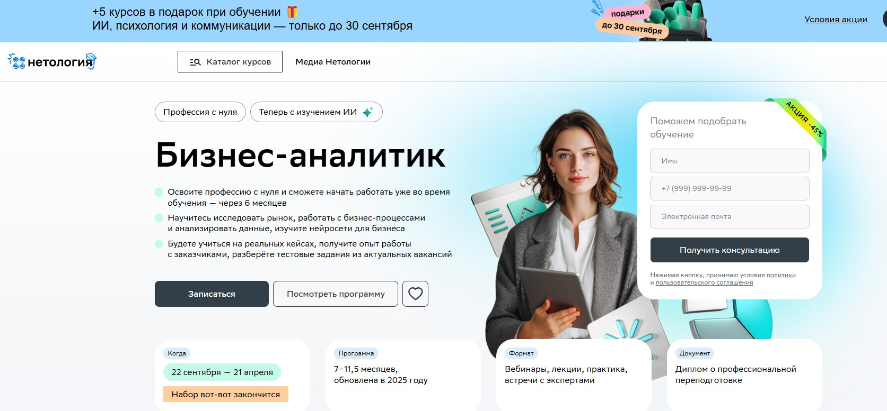⭐ Рейтинг: 4.8
- Сайт: netology.ru/programs/business-analytics-online
- Полная стоимость: от 110 900 ₽ с учётом скидки 5% при единовременной оплате. Доступна возможность получения налогового вычета — до 13% от суммы.
- Рассрочка: от 3 243 ₽ в месяц на 36 месяцев без переплат.
- Длительность: от 7 до 11,5 месяцев в зависимости от выбранной программы.
- Документ: Диплом о профессиональной переподготовке. На расширенной программе — дополнительно 3 сертификата по SQL, Power BI и Tableau.
- Трудоустройство: Поддержка студентов на всех этапах — от первых уроков до трудоустройства. Включена подготовка к собеседованиям, разбор тестовых заданий, оплачиваемые проекты и оферы от партнёров, включая AW BI. Более 2300 студентов прошли практику у работодателей.
Особенности курса:
Программа создана с учётом реальных потребностей рынка и регулярно обновляется — в 2025 году курс адаптировали под запросы IT, финтех, логистики и других отраслей. Обучение строится на реальных кейсах: вы решаете задачи, с которыми сталкиваются бизнес-аналитики в компаниях. Доступны две траектории — базовая для быстрого старта и расширенная для карьеры в IT. Присутствует практика с заказчиками, проектная работа и разбор вакансий. Включены модули по нейросетям: вы научитесь использовать ИИ для анализа данных, построения отчётности и автоматизации рутинных задач. Гибкий формат — занятия проходят вечером, доступен мобильный приложении, материалы остаются навсегда.
Преподаватели курса:
-
Яна Куренчанина — бизнес-аналитик с 2005 года, руководитель IT-проектов по автоматизации, преподаватель НИТУ «МИСиС», основатель мастерской по бизнес-анализу Business Analysis Bistró.
-
Эксперты из QIWI, «М.Видео — Эльдорадо», Bolt и других крупных компаний — практикующие аналитики, делящиеся актуальным опытом.
-
Спикеры AW BI — партнёра курса — проводят встречи, работают с дашбордами и участвуют в нетворкинге.
Кратко о программе курса:
- Исследование рынка и конкурентов, сегментация аудитории.
- Финансовое моделирование, стратегическое планирование, оценка экономического эффекта.
- Моделирование бизнес-процессов: BPMN 2.0, IDEF0, EPC.
- Работа с данными: SQL, выгрузка и обработка информации.
- Визуализация в Excel, Google Таблицах, Tableau, Power BI.
- Основы Python для аналитики.
- Применение нейросетей: ChatGPT, YandexGPT, MidJourney, GigaChat, Kandinsky, n8n и другие для задач бизнеса.
- Построение отчётов, презентаций, работа с документацией.
- Работа с KPI и OKR, планирование и управление аналитическими проектами.
- Soft skills: коммуникации, взаимодействие с командой и заказчиками.
- Разбор тестовых заданий от реальных вакансий.
Чему научитесь:
Вы освоите анализ данных, научитесь выявлять точки роста, оптимизировать процессы и создавать стратегии развития бизнеса. Овладеете инструментами аналитики и нейросетями, добавите 4 проекта в портфолио и подготовитесь к работе уже через 6 месяцев.
Преимущества и особенности:
- Практика на реальных кейсах — вы решаете задачи компаний и получаете опыт работы с заказчиками.
- Интеграция ИИ в процесс обучения — обучение использованию нейросетей, которые повышают востребованность на 20%.
- Два формата программы: начать с базового курса или сразу освоить IT-инструменты для карьерного роста.
- Поддержка до трудоустройства: помощь с резюме, собеседованиями, практикой и оферами от партнёров.
- Гибкое обучение — формат онлайн, мобильное приложение, возможность учиться без интернета.
- Возможность сменить программу в первые 2 месяца, если направление не подошло.
- Гарантия возврата денег в течение первых трёх занятий.
Читайте отзывы учеников:
Студенты отмечают чёткую структуру программы, полезные материалы и качественную обратную связь от кураторов. Многие отмечают, что курс помог структурировать знания, особенно тем, кто уже имеет опыт в смежных сферах. Практика, разбор вакансий и доступ к записям лекций — одни из самых частых плюсов. Выпускники подчёркивают, что после обучения легко проходят собеседования и получают предложения от работодателей.
Бизнес-аналитик – Яндекс Практикум
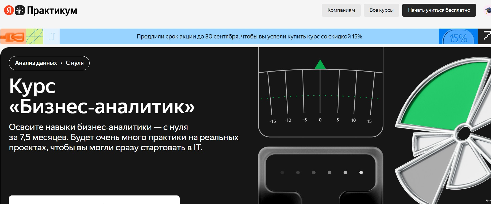⭐ Рейтинг: 4.8
- Сайт: practicum.yandex.ru/business-analyst
- Полная стоимость: от 119 000 ₽ одним платежом или от 149 000 ₽ за расширенный формат; возможен налоговый вычет до 13% — поможем с документами.
- Рассрочка: от 4 858 ₽ в месяц на 36 месяцев, без переплат.
- Длительность: 7,5 месяцев — базовый формат, 8 месяцев — расширенный.
- Документ: Диплом о профессиональной переподготовке по государственной лицензии.
- Трудоустройство: Поддержка в поиске работы до 7 месяцев после окончания: помощь с резюме, собеседованиями, стажировки и вакансии для новичков.
Особенности курса:
Обучение построено на реальной практике: вы пройдёте полный цикл работы бизнес-аналитика — от интервью с заказчиком до презентации решений и расчёта финансового эффекта. В программе 3 проекта, включая работу с настоящим клиентом и хакатон. Учебный процесс имитирует реальные условия IT-компаний: спринты, дедлайны, проверка заданий экспертами. Доступ к сообществу, наставникам и Мастерской с реальными кейсами делает подготовку максимально приближенной к работе. Обновления появляются регулярно — учат актуальному.
Кратко о программе курса:
- Введение в профессию: жизненный цикл ПО, роли в команде, различия между аналитиками.
- Поддержка существующих решений: бизнес-процессы, требования, пользовательские истории, прототипы.
- Внедрение продукта: анкетирование, интервью, техническое задание, UML, тестирование.
- Кастомная разработка: Customer Development, карта пути клиента, метрики, юнит-экономика.
- Итоговый проект: анализ текущей ситуации (as is), разработка решения (to be) и защита перед заказчиком.
- Дополнительно: применение нейросетей в работе — ChatGPT, Claude, промпт-инжиниринг, критическая оценка результатов ИИ.
- Расширенный модуль: гибкие методологии, командная практика, дополнительный кейс и больше встреч с наставниками.
Чему научитесь:
Овладеете ключевыми навыками для старта в IT: анализ требований, BPMN, SQL, работа с Excel и Google Sheets, интервью с клиентами, построение гипотез и визуализация процессов. Научитесь сотрудничать с разработчиками и продавать свои идеи руководству.
Преимущества и особенности:
- Практика с реальными заказчиками и участие в хакатоне для портфолио.
- Поддержка наставников и ревьюеров — практикующих специалистов из IT.
- Карьерный центр: подготовка к собеседованиям, помощь в трудоустройстве до 7 месяцев.
- Регулярное обновление программы с учётом трендов и внедрением ИИ.
- Гибкий график: учитесь где и когда удобно, но с соблюдением дедлайнов.
- Доступ к Мастерской — платформе с реальными проектами и командной работой.
- Возможность пройти первую тему бесплатно перед оплатой.
- Акция до 30 сентября: скидка 15% при старте до конца месяца.
Читайте отзывы учеников:
Обучающиеся отмечают качественную поддержку наставников, актуальность материала и сильную практику. Многие подчёркивают, что курс действительно помог устроиться в IT с нуля. Особенно ценят подготовку к собеседованиям, продуманный учебный план и чёткую структуру. Студенты отмечают, что после прохождения программы чувствуют себя уверенно на позиции джуниор-аналитика.
Бизнес-аналитик – Бруноям
⭐ Рейтинг: 4.7
- Сайт: brunoyam.com/online-kursy/business-analyst
- Полная стоимость: от 41 883 ₽ при единовременной оплате. Возможен налоговый вычет — вернём 13% стоимости. Грант на обучение не предоставляется.
- Рассрочка: от 3 490 ₽ в месяц на срок до 12 месяцев без переплат.
- Длительность: 7 месяцев интенсивного обучения.
- Документ: Сертификат школы и удостоверение о повышении квалификации (в тарифах «Оптимальный» и «Плюс»).
- Трудоустройство: Помощь в создании резюме, подготовке к собеседованиям и поиску вакансий. Действует гарантия: трудоустроим или вернём деньги.
Особенности курса:
Обучение построено на практике: вы решаете реальные задачи, работая с данными и бизнес-кейсами. Каждый студент получает поддержку личного наставника — опытного специалиста в аналитике — без ограничений по вопросам. Программа обновляется каждые 3 месяца, учитывая актуальные запросы рынка. В тарифах с наставником доступны консультации, дополнительные проекты и карьерная поддержка. Платформа простая и удобная: все материалы, задания и чат с наставником — в одном месте.
Преподаватели курса:
-
Владислав Вержбицкий — бизнес-аналитик в IT, более 7 лет опыта в проектировании и внедрении решений для бизнеса.
-
Ирина Пармон — практикующий аналитик, опыт в финансовой и производственной сферах, специализация — Agile и управление требованиями.
Кратко о программе курса:
- Введение в профессию: роль, компетенции, задачи бизнес-аналитика.
- Методологии разработки: Agile, Scrum, Kanban.
- Сбор и обработка информации, интервьюирование заинтересованных лиц.
- Составление технических заданий и работа с документацией.
- Моделирование бизнес-процессов, нотации, инструменты визуализации.
- Работа с Excel: автоматизация, анализ данных.
- SQL: запросы, фильтрация, агрегация.
- BI-системы и визуализация в Power BI.
- Использование Jira и Confluence в повседневной работе.
- Финансовая грамотность: unit-экономика, базовые показатели эффективности.
- Подготовка к собеседованиям, создание портфолио и карьерный рост.
Чему научитесь:
Освоите навыки анализа данных, выявления потребностей бизнеса и построения эффективных решений. Научитесь писать ТЗ, работать с командами разработки и презентовать идеи. Подготовитесь к позиции младшего специалиста и соберёте проекты для портфолио.
Преимущества и особенности:
- Гарантия трудоустройства: вернём деньги, если не найдёте работу.
- Личный наставник на всех этапах — проверка заданий за 24 часа.
- Практические проекты с настоящими данными, как в реальной компании.
- Обновлённая программа 2025 года с регулярным обновлением контента.
- Поддержка после курса — год сопровождения от наставника.
- Удобная платформа без лишней сложности: всё под рукой.
- Минимум теории, максимум практики — учитесь, действуя.
- Скидка до 45% при оплате до 22 сентября.
Читайте отзывы учеников:
Большинство выпускников отмечают, что курс помог сменить сферу и начать карьеру с нуля. Подчёркивают качественную поддержку наставников, реалистичные задачи и простую платформу. Многие подтверждают эффективную помощь в подготовке резюме и прохождении собеседований. Студенты высоко оценивают соотношение цены и объёма практики, называя обучение одним из самых практичных на рынке.
Профессия Бизнес-консультант – MBA CITY
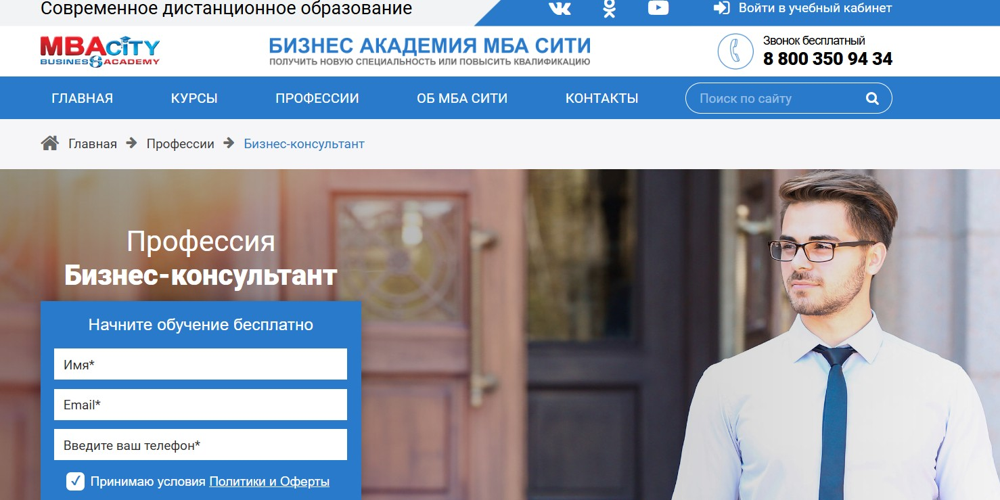⭐ Рейтинг: 4.7
- Сайт: mbacity.ru/profession/Business-consultant/
- Полная стоимость: 24 900 рублей с возможностью налогового вычета. Помощь в оформлении документов для возврата 13%.
- Рассрочка: 2 080 рублей в месяц на 12 месяцев, без переплат и первоначального взноса.
- Длительность: от 3 до 6 месяцев в зависимости от интенсивности.
- Документ: Диплом о профессиональной переподготовке, внесённый в ФИС ФРДО, диплом международного образца на английском языке и квалификационный сертификат по профстандартам.
- Трудоустройство: Поддержка в построении карьеры, помощь в оформлении портфолио, доступ к вакансиям от партнёрских компаний и содействие в запуске частной практики.
Особенности курса:
Обучение построено на практике и реальных бизнес-задачах. Слушатели осваивают управленческий и стратегический консалтинг, учатся проводить диагностику, выстраивать процессы и внедрять решения в различных сферах. Программа включает практические кейсы, тестирование и автоматическую проверку заданий. Все материалы доступны в аудиоформате и в учебном кабинете. Академия имеет лицензию от Департамента образования Москвы, а её стандарты соответствуют ГОСТ Р и ISO 9001:2015, что подтверждает качество образовательных услуг. Каждый выпускник получает документ, признаваемый работодателями и проверяемый в государственной системе.
Кратко о программе курса:
- Основы бизнес-консультирования и виды консалтинговых услуг.
- Методики диагностики проблем в компании.
- Стратегическое планирование и управление изменениями.
- Финансовый и управленческий анализ.
- Разработка бизнес-моделей и процессов.
- Коммуникации с заказчиком и ведение переговоров.
- Коучинг и наставничество руководителей.
- Практикумы по работе с клиентами и кейс-анализ.
- Правовые аспекты консалтинговой деятельности.
- Подготовка к сдаче экзаменационных заданий и итоговый проект.
Чему научитесь:
Вы освоите навыки анализа бизнес-процессов, научитесь консультировать компании, выявлять слабые зоны и внедрять эффективные решения. Получите компетенции для запуска собственной практики или работы в консалтинговом агентстве.
Преимущества и особенности:
- Доступ к обучению бесплатно с первого урока — можно начать без оплаты.
- Официальный диплом, внесённый в федеральную систему ФИС ФРДО, подтверждает квалификацию перед любым работодателем.
- Международный диплом на английском языке открывает возможности для работы за рубежом.
- Гибкий формат: можно учиться в любое время, прослушивать лекции в аудио, проходить тесты онлайн.
- Соответствие стандартам ISO 9001:2015 и наличие государственной лицензии гарантируют качество.
- Поддержка студентов на всех этапах и помощь в трудоустройстве.
Читайте отзывы учеников:
Слушатели отмечают простоту и структурированность материала, высокую практическую ценность курса и удобство интерфейса. Многие подчёркивают, что обучение помогло перейти в новую сферу, повысить доход или запустить собственное консультирование. Особенно хвалят поддержку команды, быструю проверку заданий и наличие реальных кейсов.
Профессия Бизнес-консультант – Новый Бизнес Университет
⭐ Рейтинг: 4.6
- Сайт: nbu.su/profession/biznes-konsultant/
- Полная стоимость: Уточняется на сайте, доступна рассрочка, возможен налоговый вычет по программам дополнительного образования.
- Рассрочка: Индивидуальные условия оплаты, включая рассрочку без переплат на срок до 12 месяцев.
- Длительность: От 3 до 6 недель, в зависимости от интенсивности прохождения.
- Документ: Официальный диплом установленного образца с международным приложением, заносится в реестр ФИС ФРДО.
- Трудоустройство: Поддержка в трудоустройстве, помощь в построении карьерного пути и развитии частной практики.
Особенности курса:
Обучение построено на основе современной слайд-системы с озвученными уроками и возможностью проходить тесты неограниченное количество раз. Это позволяет эффективно изучать материал в удобном темпе. Программа разработана практикующими экспертами в сфере бизнеса и предпринимательства. Доступ к курсу сохраняется на 3 года, что даёт возможность возвращаться к материалам. Обучение доступно дистанционно, охватывает более 360 направлений, и ведётся более чем 560 преподавателями. Университет работает с 2001 года и насчитывает более 30 000 выпускников по России и за рубежом.
Кратко о программе курса:
- Введение в бизнес-консультирование и ключевые задачи специалиста.
- Методики анализа бизнес-процессов и выявления узких мест.
- Разработка стратегии развития предприятия и управленческое планирование.
- Техники консультирования и выстраивания доверительных отношений с клиентом.
- Практические кейсы и моделирование реальных бизнес-ситуаций.
- Навыки презентации предложений и ведения переговоров с заказчиками.
- Правовые аспекты деятельности консультанта и оформление договоров.
- Поддержка при запуске собственной практики или трудоустройстве.
Чему научитесь:
Научитесь диагностировать проблемы в бизнесе, разрабатывать решения, эффективно консультировать предпринимателей и внедрять управленческие изменения. Получите навыки, востребованные в корпорациях и консалтинговых компаниях.
Преимущества и особенности:
- Современный формат с озвученными слайдами и тестами в неограниченном количестве.
- Доступ к курсу на 3 года — можно учиться в удобном ритме.
- Диплом с международным приложением, вносится в государственный реестр.
- Бесплатная доставка документов в любую точку мира.
- Поддержка персонального тьютора на всех этапах.
- Помощь в трудоустройстве и построении профессиональной карьеры.
- Курс разработан практикующими экспертами в области бизнеса и менеджмента.
- Учебные материалы ориентированы на практическое применение.
Читайте отзывы учеников:
Обучавшиеся отмечают понятную подачу материала, гибкость графика и реальную применимость знаний. Многие отмечают поддержку тьюторов, оперативность в выдаче дипломов и удобный личный кабинет. Выпускники отмечают, что после прохождения программы смогли запускать консультационную практику или устроиться в компании в роли бизнес-специалистов. Позитивно оценивают качество преподавателей и практическую направленность курсов.
Бизнес-консультирование и корпоративное обучение – НИУ ВШЭ (Нижний Новгород)
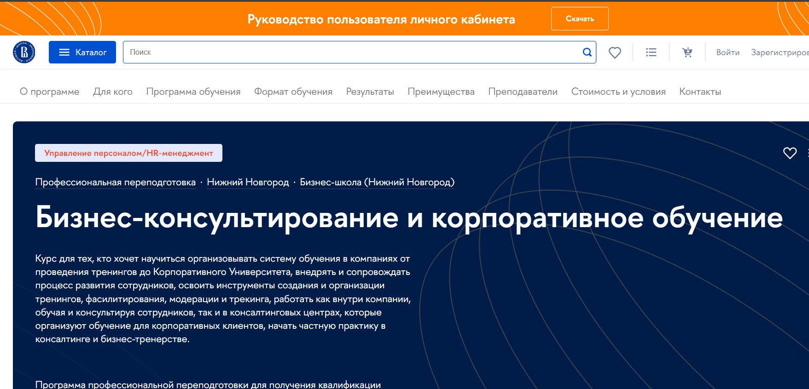⭐ Рейтинг: 4.6
- Сайт: hse.ru/edu/dpo/922619914
- Полная стоимость: 235 000 рублей с возможностью рассрочки от НИУ ВШЭ без переплат и возврата до 13% через налоговый вычет.
- Рассрочка: До 12 месяцев без переплат. Платежи от 19 583 рублей в месяц.
- Длительность: 8 месяцев.
- Документ: Диплом о профессиональной переподготовке установленного образца НИУ ВШЭ.
- Трудоустройство: Программа развивает навыки для запуска частной практики, работы в консалтинговых агентствах и HR-подразделениях. Есть поддержка в построении карьерного роста и реализации проектов.
Особенности курса:
Обучение охватывает все ключевые направления построения системного подхода к развитию персонала: от стратегического менеджмента и организационной диагностики до цифровых навыков и фасилитации. Программа сочетает академическую теорию с практикой реальных бизнес-кейсов. Упор сделан на отработку инструментов бизнес-коучинга, проектирование тренингов, управленческие решения и внедрение корпоративных университетов. Формат предполагает живое взаимодействие: более 60 вебинаров, практические сессии и менторская поддержка. Все занятия ведут практикующие специалисты с ученой степенью и сертификациями ICF, SPK и другими.
Преподаватели курса:
-
Юлия Чилипенок — руководитель программы, доктор социологических наук, профессор кафедры стратегического менеджмента НИУ ВШЭ, сертифицированный коуч ICF и НФПМК.
-
Екатерина Обухова — заместитель руководителя, основатель Академии развивающих коммуникаций, командный коуч PCC ICF, финалист национальной премии «ТОП-3 Business & Executive коучей».
-
Елена Васильева — кандидат психологических наук, доцент, бизнес-тренер и сертифицированный фасилитатор ICDP.
-
Светлана Савинова — кандидат педагогических наук, доцент, специалист по карьерному консультированию и организационной психологии.
Кратко о программе курса:
- Основы специальности: стратегическое мышление, управленческие решения, организационные изменения.
- Бизнес-консультирование: диагностика, проектирование решений, сопровождение изменений.
- Бизнес-педагогика: разработка тренингов, модерация, фасилитация, оценка эффективности обучения.
- Дополнительные навыки: soft skills, цифровые инструменты, трекинг развития, коуч-сессии.
- Практика: реализация собственного образовательного проекта под кураторством.
- Итоговая аттестация: квалификационный экзамен и защита проекта.
Чему научитесь:
Научитесь проектировать и внедрять программы корпоративного обучения, проводить тренинги и вести консалтинговые проекты. Получите компетенции методолога, фасилитатора, бизнес-тренера и коуча для работы внутри компаний или на заказ.
Преимущества и особенности:
- 80% времени — практическая отработка инструментов: кейсы, тренинги, симуляции.
- Выпускник осваивает сразу несколько востребованных ролей: консультант, тренер, коуч, фасилитатор, модератор, трекер.
- Обучение ведут преподаватели НИУ ВШЭ с академической базой и реальным опытом внедрения решений в бизнесе.
- Онлайн-формат с живыми занятиями по будням вечером — удобно совмещать с работой.
- Группы формируются по принципу очередности подачи документов — места ограничены.
- Программа дает диплом ведущего вуза страны по управлению — НИУ ВШЭ занял 1 место в рейтинге QS 2024.
Читайте отзывы учеников:
Выпускники отмечают высокий уровень подготовки, практико-ориентированный подход и поддержку кураторов. Многие после курса начали работать как внешние консультанты или запустили собственные тренинговые проекты. Особенно ценят живые вебинары, профессионализм преподавателей и четкую структуру программы. Отмечают, что навыки применимы сразу после обучения — уже на первых модулях участники запускают пилотные проекты в компаниях.
Дипломная программа «Бизнес-консультант» – Бауманский учебный центр «Специалист»
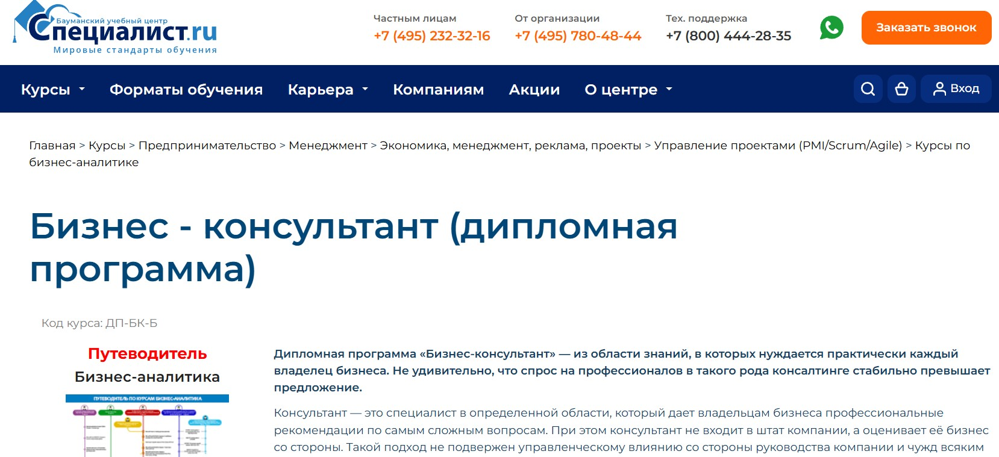⭐ Рейтинг: 4.5
- Сайт: specialist.ru/track/dp-bk
- Полная стоимость: 198 290 ₽ для частных лиц, 231 890 ₽ для организаций. Возможен налоговый вычет 13%.
- Рассрочка: Первый взнос от 39 650 ₽, далее — удобные платежи без переплат.
- Длительность: 280 академических часов, 3–6 месяцев.
- Документ: Удостоверение о повышении квалификации, электронные сертификаты по каждому модулю.
- Трудоустройство: Поддержка в запуске консалтинговой практики, практические кейсы для портфолио, итоговая консультация как демонстрация компетенций.
Особенности курса:
Программа формирует системное понимание бизнеса с позиции внешнего эксперта. Вы научитесь выявлять слабые зоны компании, разрабатывать стратегию роста и управлять изменениями. Обучение построено на реальных кейсах, с упором на практические навыки: анализ, переговоры, риск-менеджмент, ценообразование, маркетинг и реинжиниринг процессов. Преподаватели — действующие консультанты с опытом внедрения решений в бизнесе. Возможность учиться онлайн или в аудитории, а также гибкий график позволяют совмещать с работой. Рассрочка делает обучение доступным без финансовой нагрузки.
Кратко о программе курса:
- Основы консалтинга: принципы, этика, оценка бизнеса со стороны.
- Эффективные переговоры: техники, подготовка, управление коммуникациями.
- Стратегический менеджмент: постановка целей, долгосрочное планирование.
- Бизнес-анализ по стандарту BABOK® Guide 3.0: сбор требований, диагностика.
- Маркетинг и реклама: позиционирование, продвижение, управление каналами сбыта.
- Практикум по инструментарию бизнес-аналитика: диаграммы, модели, фреймворки.
- Управление рисками: оценка, моделирование, стратегии снижения.
- Реинжиниринг бизнес-процессов: анализ, оптимизация, масштабирование.
- Управление изменениями: трансформация компании, устойчивость к нововведениям.
Чему научитесь:
После прохождения курса вы будете уметь структурировать бизнес, находить узкие места, разрабатывать стратегии развития и внедрять изменения. Научитесь анализировать риски, управлять проектами и консультировать компании под ключ — с полной ответственностью за результат.
Преимущества и особенности:
- Практико-ориентированная программа с заданиями от преподавателей-практиков.
- Гибкий формат: выбор между очным и онлайн-обучением, занятия вечером и на выходных.
- Доступна беспроцентная рассрочка — не нужно сразу оплачивать полную сумму.
- Получение комплекта сертификатов и удостоверения, подтверждающего квалификацию.
- Разбор реальных бизнес-кейсов и финальная консультационная сессия как итоговый проект.
- Подойдёт владельцам бизнеса, управленцам и начинающим консультантам для систематизации знаний.
- Повышает конкурентоспособность на рынке — услуги бизнес-консультантов востребованы и высокооплачиваемы.
Читайте отзывы учеников:
Слушатели отмечают высокую практическую ценность курса, доступность материала и поддержку преподавателей. Многие подчёркивают, что программа помогла увидеть свой бизнес со стороны, систематизировать подходы и начать консультировать других. Удобный график и онлайн-формат особенно ценят работающие специалисты. Постоянные задания и финальная консультация позволили сразу применить знания в реальных условиях.